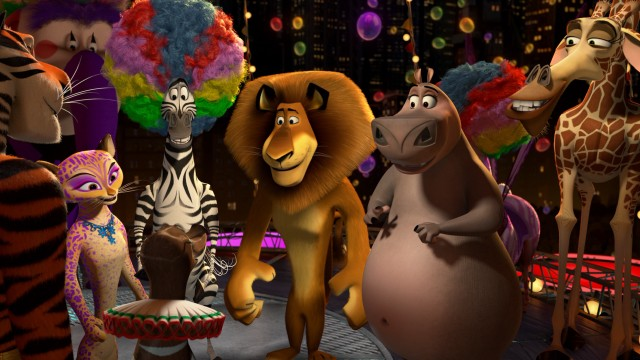

Trailer
Personagens
Sinopse
"Madagascar 3: Os Procurados" é um filme de animação lançado em 2012, que continua a
saga dos animais do zoológico de Nova York — Alex, Marty, Melman e Gloria — enquanto
tentam
voltar para casa. Desta vez, eles estão na Europa, sendo perseguidos pela implacável
agente de controle de animais, Capitã Chantel DuBois. Para escapar, eles se juntam a um
circo itinerante, fazendo novos amigos e embarcando em apresentações cheias de adrenalina.
Enquanto aprimoram o espetáculo, eles descobrem o valor da amizade, do lar e da liberdade.
Com muita comédia, ação e momentos emocionantes, o filme encerra a trilogia com uma mensagem
sobre encontrar seu lugar no mundo.
Informações Técnicas
- Diretores:Eric Darnell,Tom McGrath e Conrad Vernon
- Elenco principal:
Ben Stiller como Alex (o leão)
Chris Rock como Marty (a zebra)
Andy Richter como Mort (o lêmure)
David Schwimmer como Melman (a girafa)
Jada Pinkett Smith como Gloria (a hipopótama)
Sacha Baron Cohen como King Julien (o lêmure)
Cedric the Entertainer como Maurice (o lêmure)
Frances McDormand como Capitã DuBois (a caçadora)
Jessica Chastain como Gia (a tigresa, integrante do circo) - Duração:93 minutos
- Classificação: Livre (para todos os públicos)
- Gênero: Animação,Aventura e Comédia